Bingo supports the following molecule formats:
Bingo supports the following reaction formats:
Almost all features of the original Daylight SMILES format are supported, including:
The only features that are not supported are:
Almost all features of the original Daylight SMARTS format are supported, including:
The only features that are not supported are:
The following ChemAxon SMILES extensions are supported:
MDL (Symyx) Molfiles and Rxnfiles are supported by Bingo. Both format versions (2000 and 3000) are supported. Almost all format features are supported, including:
The only features that are not supported are:
MDL (Symyx) SDfile format (.sdf) is supported for export from user tables. SDFile, RDfile (.rdf), and multiline SMILES formats are supported for import to user tables.
Internal Bingo binary molecule and reaction formats are designed exclusively for database molecules and reactions, but not for queries. All the molecule and reaction features that are not query features are supported, including:
If you have a database table with Molfiles, we recommend that you use:
If you have a database table with Rxnfiles, the recommendations are the same, but please note that the reaction SMILES format does not contain the reacting centers information. So if you need the reacting centers in the database reactions, use Rxnfiles or binary format. If you do not use the highlighting frequently, you can choose not to save atom positions.
For molecule and reaction storage, Bingo supports the following Oracle data types equally well:
We recommend that you use:
However, you can use any data type for any of the supported formats. Please consider the limitation of VARCHAR2 to 4000 characters. This number of characters is more than enough for SMILES, but usually it is not enough for Molfiles and Rxnfiles.
Mixing different formats in the database is not a problem. For example, you can insert SMILES string to CLOB column that contains Molfiles.
You can convert molecules and reactions from any format to any other format using Bingo operators, namely
Molfile(), Rxnfile(), SMILES(), RSMILES(), CompactMolecule(), CompactReaction(), Zip(), and
Unzip(). See below for details.
Note: Conversion operators work only for target (database) molecules and reactions. Query features are not supported for conversion.
Oracle stores table data in cached blocks in a row-wise manner. That means, the more data in each row, the more blocks that Oracle has to read from disk to fetch one column with molecule or reaction number. In order to minimize the number of blocks (and so minimize the query completion time), you may want to include less data in table rows. This is the reason for using the compact formats like SMILES or Bingo binary format.
Note: If you have both columns with large items (Molfiles/Rxnfiles) and compact items (SMILES/binary) in one table, the query performance will be even worse than with the single Molfile/Rxnfile column. The benefits of compact formats are evident when you separate the compact table from the initial large one.
For a significant increase in the operator performance when querying a table, you can assign a special index on a table field (column) that contains molecules or reactions. CLOB, BLOB, and VARCHAR2 columns are all available for indexing. All queries will return the same set of results with or without the index.
The more records the table contains, the longer it takes to create an index.
Note: Renaming the table after index creation is not allowed.
In some situations you do not need all of the search features. In these cases, you have options for skipping some indexing sub-procedures in order to accelerate the indexing. See below for details.
You have two options for monitoring the index creation process (which may take quite a long time):
You can add, remove, or edit records in the table after the index is created. Adding records does not slow down the queries, i.e. the performance will be the same as if you had indexed the whole table at once. No re- indexing is required after adding the records.
You can drop the index at any time. After the drop, the queries will slow down but return the same results.
Note: Due to technical limitations with Oracle, adding the molecules in an indexed table is slower than indexing the existing molecules. For example, if you have an indexed table with 5000 molecules and if you want to add another 50000, dropping the index before adding and re-creating it would be a good decision. On the other hand, if you have 50000 indexed molecules, adding another 5000 will be faster if you do not re-index.
Note: If you delete or replace substantial amount of records in the indexed table, re-creating the index in order will speed up the queries.
After you insert or update, you must either:
Bingo.FlushInserts() procedure.to make the inserted/updated rows available for other SQL sessions. If there are no other sessions that are using the table you are updating, this is not necessary.
Note: You must call FlushInserts() before doing INSERT or UPDATE of the same table from another
session. If you do another INSERT or UPDATE concurrently from another session, it will hang until the
first session does FlushInserts() or terminates.
FlushInserts() takes some time, and as a result, it is not included in the INSERT and UPDATE
implementations. You do not need to call FlushInserts() after each INSERT or UPDATE. It is normal to
call it after you have finished updating the table.
Here is an example:
CREATE INDEX $index ON $table ($column) INDEXTYPE IS Bingo.MoleculeIndex;
INSERT INTO $table (SELECT * FROM $other_table);
EXECUTE BEGIN Bingo.FlushInserts(); END;
You can specify the query molecule as a Molfile (including various query features), or as a SMILES string. For reaction queries, use Rxnfiles or reaction SMILES. As for Oracle data types, CLOB and VARCHAR2 are supported for queries.
Note: In order to make substructure and SMARTS search faster, Bingo loads the indexed molecules into memory. The loading itself takes some time, and as a result, the first substructure or SMARTS query runs slower than all the subsequent ones. The loaded molecules are shared across other SQL sessions, and so other sessions there will not encounter such time lags. The memory is freed as soon as all the sessions working with this table are disconnected.
The Bingo.SMILES() operator can be used for converting Molfiles and binary molecules to SMILES. The
operator works equally well with CLOB, BLOB, and VARCHAR2 operands. The operator always returns the VARCHAR2
result.
SELECT Bingo.SMILES($molfile) FROM DUAL;
SELECT Bingo.SMILES($binary) FROM DUAL;
SELECT Bingo.SMILES($column) FROM $table;
Note: If the input molecule is badly formed (i.e. does not conform to format, has drawing mistakes, or has unsupported features), Bingo throws the exception to Oracle.
When you convert a table to SMILES, you have two possibilities for skipping the bad exception-raising molecules:
1. Short option:
CREATE TABLE $newtable AS SELECT $id $newid, Bingo.SMILES($molfile) $smiles FROM $table
WHERE Bingo.CheckMolecule($molfile) IS NULL;
2. Lengthy but faster option:
CREATE TABLE $newtable ($newid NUMBER, $smiles VARCHAR2(4000));
set serveroutput on;
declare
i int := 0;
begin
dbms_output.enable(1000000);
for item in (select $id, $molfile from $table) loop
begin
INSERT INTO $newtable values(item.$id, bingo.SMILES(item.$molfile));
exception
when others then
dbms_output.put_line('Bad molecule '|| item.$id ||': ' || SQLERRM);
end;
i := i + 1;
if i mod 1000 = 0 then
COMMIT;
end if;
end loop;
end;
$table contains Molfiles in the $molfile column and molecule IDs in the $id column. $newtable
contains SMILES in the $smiles column and molecule IDs in the $newid column.
The Bingo.CompactMolecule() operator can be used for converting Molfiles and SMILES to the internal binary
format. The operator works equally well with CLOB, BLOB, and VARCHAR2 operands. The operator always returns
the BLOB result.
SELECT Bingo.CompactMolecule($molfile, $xyz) FROM DUAL;
SELECT Bingo.CompactMolecule($smiles, $xyz) FROM DUAL;
SELECT Bingo.CompactMolecule($column, $xyz) FROM $table;
The $xyz parameter must be 0 or 1. If it is 1, the positions of atoms are saved to the binary format. If it
is zero, the positions are skipped.
Note: If the input molecule is badly formed (i.e. does not conform to any format, has drawing mistakes, or has unsupported features), Bingo throws the exception to Oracle.
When you convert a table to binary format, you have two possibilities for skipping the bad exception-raising molecules:
1. Short option:
CREATE TABLE $newtable AS SELECT $id $newid, Bingo.CompactMolecule($molfile, $xyz) $binary FROM $table
WHERE Bingo.CheckMolecule($molfile) IS NULL;
2. Lengthy but faster option:
CREATE TABLE $newtable ($newid NUMBER, $binary BLOB) lob($binary) store as (enable storage in row);
set serveroutput on;
declare
i int := 0;
begin
dbms_output.enable(1000000);
for item in (select $id, $molfile from $table) loop
begin
INSERT INTO $newtable values(item.$id, bingo.CompactMolecule(item.$molfile, $xyz));
exception
when others then
dbms_output.put_line('Bad molecule '|| item.$id ||': ' || SQLERRM);
end;
i := i + 1;
if i mod 1000 = 0 then
COMMIT;
end if;
end loop;
end;
The following command creates the index:
CREATE INDEX $index ON $table ($column) INDEXTYPE IS Bingo.MoleculeIndex;
$table is the name of the table containing molecule data in column $column. $index is the unique name
of the Oracle domain index that will be created.
You can disable the computation of specific fingerprint parts (saving both time and disk space), setting the corresponding parameter to zero:
FP_ORD_SIZE=0, if you are not planning to undertake a substructure or SMARTS search often;FP_TAU_SIZE=0, if you are not planning to undertake a tautomer substructure search often;FP_ANY_SIZE=0, if your substructure search queries will not contain a lot of query features;FP_SIM_SIZE=0, if you will never use similarity search capability.Here is an example to turn off “any” and “tautomer” fingerprint bits:
CREATE INDEX $index on $table($column) INDEXTYPE IS Bingo.MoleculeIndex PARAMETERS('FP_TAU_SIZE=0 FP_ANY_SIZE=0');
Without fingerprints, you will still be able to perform the search, but it will run slowly. In order to make it run fast, you will need to re-create the index with the fingerprints enabled.
You can specify number of parallel threads for the index creation procedure. For example, if you want to use only one core of your multi-core CPU, please set the number of threads to one:
CREATE INDEX $index on $table($column) INDEXTYPE IS Bingo.MoleculeIndex PARAMETERS('NTHREADS=1');
The default value for NTHREADS is zero, which means that the number of threads will be equal to the number
of CPU cores (auto-detected) plus one.
The general form of substructure search query is as follows:
SELECT * FROM $table WHERE Bingo.Sub($column, $query, $parameters)=1;
$table is the name of the table containing molfile CLOBs in the column $column.$query is a VARCHAR2 or CLOB containing the query molfile or SMILES string.$parameters is a VARCHAR2 string.You can omit the $parameters value:
SELECT * FROM $table WHERE Bingo.Sub($column, $query)=1;
This is equal to the following:
SELECT * FROM $table WHERE Bingo.Sub($column, $query, '')=1;
A substructure search query with no $parameters returns the molecules that include the query structure as
the substructure or exact match. The matched part is highlighted in examples.
| Substructure Query | Examples of Molecules Retrieved |
|---|---|
|
The query molecule can be disconnected. Matched fragments in the target structure cannot overlap.
| Substructure Query | Examples of Molecules Retrieved | Examples of Molecules Not Retrieved |
|---|---|---|
 |
The explicit hydrogens specified in the query structure must match any (explicit or implicit) hydrogen in the target structure.
| Substructure Query | Examples of Molecules Retrieved | Examples of Molecules Not Retrieved |
|---|---|---|
 |
 |
|
 |
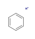 |  |
The presence of charged atoms in the query molecule is an additional property. If the charge is specified, it must match the charge in the target molecule. An atom without a specific charge can match an atom with either charge. The same rule applies for radicals.
| Substructure Query | Examples of Molecules Retrieved | Examples of Molecules Not Retrieved |
|---|---|---|
 |
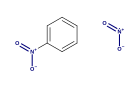 | |
 |
 |
 |
 |
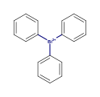 |
The presence of isotopes atoms in the query molecule is an additional property, like charges.
| Substructure Query | Examples of Molecules Retrieved |
|---|---|
 |
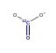 |
 |
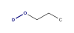 |
Valence can be specified on the query atoms.
| Substructure Query | Examples of Molecules Retrieved | Examples of Molecules Not Retrieved |
|---|---|---|
 |
| Substructure Query | Examples of Molecules Retrieved | Examples of Molecules Not Retrieved |
|---|---|---|
 |
| Substructure Query | Examples of Molecules Retrieved | Examples of Molecules Not Retrieved |
|---|---|---|
 |
 |
An unsaturated atom must have at least one non-single bond.
| Substructure Query | Examples of Molecules Retrieved | Examples of Molecules Not Retrieved |
|---|---|---|
 |
 |
You can specify the number of ring bonds that are connected to the atom.
| Substructure Query | Examples of Molecules Retrieved | Examples of Molecules Not Retrieved |
|---|---|---|
 |
 |
 |
“Ring” query bonds must match the ring(s) of the target molecule; “chain” query bonds must not.
| Substructure Query | Examples of Molecules Retrieved | Examples of Molecules Not Retrieved |
|---|---|---|
 |
 |
 |
| 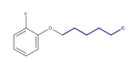 |
“A” query atom matches any atom except hydrogen (or its isotopes). “Q” query atom matches any atom except hydrogen and carbon.
| Substructure Query | Examples of Molecules Retrieved | Examples of Molecules Not Retrieved |
|---|---|---|
 |
||
 |
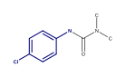 |  |
You can specify the list of elements that are allowed or prohibited for the query atom. Hydrogen in the list can match the explicit or implicit hydrogen of the target.
| Substructure Query | Examples of Molecules Retrieved |
|---|---|
 |
|
 |
The following types of query bonds are supported:
Below is an example with 'Single or Double' bonds. Such bonds cannot match aromatic target bonds.
| Substructure Query | Examples of Molecules Retrieved | Examples of Molecules Not Retrieved |
|---|---|---|
 |
 |
 |
You can specify the “stereo” flag on a carbon double bond that you do not want to rotate in order to exclude cis-trans isomers from the search results. Explicit and implicit hydrogen substituents are supported.
| Substructure Query | Examples of Molecules Retrieved | Examples of Molecules Not Retrieved |
|---|---|---|
| 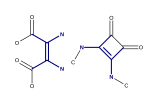 | ||
 |
 |
The following tetrahedral stereocenters are allowed:
Also, a special type of tetrahedral stereocenter—with the pyramid is formed by 3 neighbor atoms and the lone pair of electrons—is allowed:
The stereocenter is defined by up- or down-oriented stereobond(s) connected to it. The chirality is determined from the stereobond orientation and the position of atoms. The stereocenter that has an “absolute” configuration can match only “absolute” stereocenters that have the same chirality.
| Substructure Query | Examples of Molecules Retrieved | Examples of Molecules Not Retrieved |
|---|---|---|
 |
 |
Here are two examples of non-carbon chiral centers:
| Substructure Query | Examples of Molecules Retrieved |
|---|---|
| 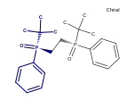 | |
 |
MDL notation of stereogroups is supported. “AND” stereocenters can match “AND”, “OR”, and absolute ones; “OR” stereocenters can match “OR” and absolute ones. Target stereo-groups cannot be more fragmented than the query stereo-groups.
| Substructure Query | Examples of Molecules Retrieved | Examples of Molecules Not Retrieved |
|---|---|---|
 |
||
 |
 |
“Either” stereobond can be specified in the query. The corresponding stereocenter matches any stereocenter regardless of chirality.
| Substructure Query | Examples of Molecules Retrieved | Examples of Molecules Not Retrieved |
|---|---|---|
 |
 |
 |
Note: The embedding of the substructure is not limited to the way in which it is drawn. Sometimes, single bonds can “swap”, producing the hits that are correct, but appear strange.
| Substructure Query | Examples of Molecules Retrieved |
|---|---|
 |
 |
Note: A chiral center with explicit hydrogen can match a chiral center with implicit hydrogen, and vice versa.
| Substructure Query | Examples of Molecules Retrieved |
|---|---|
 |
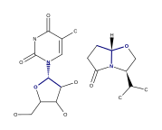 |
 |
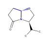 |
Markush search has the same syntax as the basic substructure search, and it will be performed automatically if the query molecule contains one or more R-groups.
| Markush Query | Examples of Molecules Retrieved | Examples of Molecules Not Retrieved |
|---|---|---|
| 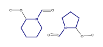 |  |
|
 |
Aromatic bonds can match only aromatic bonds.
| Substructure Query | Examples of Molecules Retrieved | Examples of Molecules Not Retrieved |
|---|---|---|
 |
 |
|
 |
 |
|
 |
 |
Some queries with query features can have ambiguous aromaticity status: they are aromatic in one matching and not aromatic in another matching.
| Substructure Query | Examples of Molecules Retrieved | Examples of Molecules Not Retrieved |
|---|---|---|
 |
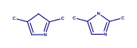 | |
 |
 |
 |
Markush queries are allowed to match both aromatic and non-aromatic targets.
| Substructure Query | Examples of Molecules Retrieved |
|---|---|
| 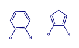 |
Charges and aromatic bonds are matched independently. In some structures where the acquisition of the charge by an atom destroys the aromaticity of a ring, matching is not possible due to the mismatch of bond orders.
| Substructure Query | Examples of Molecules Not Retrieved |
|---|---|
 |
 |
However, uncharged aromatic queries match charged aromatic structures:
| Substructure Query | Examples of Molecules Retrieved |
|---|---|
| 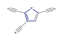 |
Pseudo-atom in the query structure can match only the same pseudo-atom in the target structure. The matching is case-sensitive.
| Substructure Query | Examples of Molecules Retrieved | Examples of Molecules Not Retrieved |
|---|---|---|
 |
 |
Pseudo-atoms in target structures are never expanded:
| Substructure Query | Examples of Molecules Not Retrieved |
|---|---|
 |
 |
Query atoms can match pseudo-atoms:
| Substructure Query | Examples of Molecules Retrieved |
|---|---|
 |
 |
Note: 'X' atom is treated as 'any halogen' query atom by default, but there is an option to treat it as pseudo-atom. In order to treat it so, please run the following SQL statement prior to table indexing:
exec Bingo.TreatXAsPseudoatom(1);
After that, please reconnect to the database. This setting will be saved, so you will never need to run the statement again (unless you re-install the cartridge). To get the original behavior back, you can run the following SQL statement:
exec Bingo.TreatXAsPseudoatom(0);
| Substructure Query | Examples of Molecules Retrieved (Or Not) | Comment |
|---|---|---|
 |
 |
Matches with “x as pseudo atom” option; Raises an error with “x as any halogen atom” option (default). |
 |
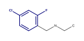 | Matches with “x as any halogen atom” option (default); Does not match with “x as pseudo atom” option. |
The resonance substructure search is provided by the Sub operator with RES parameter:
SELECT * FROM $table WHERE Bingo.Sub($column, $query, 'RES')=1;
With this type of search you can find molecules whose resonance forms contain the query molecule.
| Substructure Query | Example of Molecule Retrieved | Matched Resonance Form |
|---|---|---|
 |
 |
 |
| 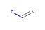 | 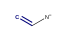 |
The query molecule can contain any query features:
| Substructure Query | Example of Molecule Retrieved | Matched Resonance Form |
|---|---|---|
 |
 |
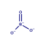 |
 |
 |
 |
Impossible resonance forms are not matched:
| Substructure Query | Example of Molecule Not Retrieved |
|---|---|
 |
 |
Actually, only the main resonance contributors are matched. The main resonance contributors are resonance forms that have the maximum number of atoms with the full octet and/or the minimum number of atoms with nonzero formal charge. For example, the following structure would not match itself because both atoms are charged and only one atom has a full octet:
| Substructure Query | Example of Molecule Not Retrieved |
|---|---|
Uncharged atoms still match charged ones in the resonance search:
| Substructure Query | Example of Molecule Retrieved | Matched Resonance Form |
|---|---|---|
 |
 |
A resonance chain can be of any length:
| Substructure Query | Example of Molecule Retrieved |
|---|---|
 |
 |
Cyclic resonance forms are currently not supported:
| Substructure Query | Example of Molecule Not Retrieved |
|---|---|
 |
 |
Bingo supports all types of 3D constraints for the queries in MDL (Symyx) Molfile 2000 format:
The substructure match with 3D constraints follows the rules of the ordinary substructure match. In addition, the 3D constraints defined in the query molecule must be fulfilled by the corresponding atoms of the target. If the query can be embedded in several ways, all embeddings are checked. The query matches the target when at least one embedding conforms to the conditions.
Note: 3D constraints of Molfile 3000 format are not supported.
This type of 3D search treats the molecule as a rigid structure consisting of points in space. Similar to the case of the search with constraints, all inclusions of the query are checked against the following condition: the structure of the query is transformed to its image on the target by an affine transformation (translation+rotation+scale). 1 The syntax of the affine transformation substructure search is as follows:
SELECT * FROM $table WHERE Bingo.Sub($column, $query, 'AFF $rms')=1;
rms is the maximum allowed root-mean-square deviation of all imposed atoms. It is measured in angstroms.
The query atoms that are fixed must be labeled fixed. The imposition of other atoms is not restricted to
rms.
The following example makes no chemical sense, but is included here as a simple two-dimensional illustration of the affine transformation search:
| Substructure Query | Parameters | Examples of Molecules Retrieved | Examples of Molecules Not Retrieved |
|---|---|---|---|
 |
AFF 0.1 |
 |
Note: When no atoms are labeled fixed, all of them are considered fixed.
Any conformation can be obtained by rotating the molecule around single bonds. Thus, the inclusion is correct
if the image of the query molecule is the conformation of the query, i.e. a sequence of rotations of the
molecule around single bonds converts the query into a substructure of the target. In a way similar to affine
transformation search, you can set the rms parameter in order to define the accuracy of the transformation.
The syntax of the conformational substructure search is as follows:
SELECT * FROM $table WHERE Bingo.Sub($column, $query, 'CONF $rms')=1;
| Substructure Query | Parameters | Examples of Molecules Retrieved | Examples of Molecules Not Retrieved |
|---|---|---|---|
CONF 0.1 |
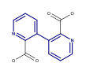 |
You can search over your database for SMARTS expression match with the following query:
SELECT * FROM $table WHERE Bingo.SMARTS($column, $smarts)=1;
While a lot of SMARTS notation is allowed in Sub() operator queries as well, there
are differences between substructure and SMARTS search:
SMARTS fragments $(...) are not allowed in ordinary substructure search
Empty bond designator (like 'CC' or 'cc') denotes 'single or aromatic' bond in SMARTS().
In Sub(), it denotes aromatic bond, if it belongs to a ring and has both
end atoms aromatic (lowercase); otherwise, it denotes a single bond.
'C' within SMARTS() means aliphatic carbon, while 'C' within Sub() means any carbon.
The same applies to 'B', 'N', 'O', 'S', 'P'. 'C1~C~C~C~C~C~1' won't match 'c1ccccc1'
in SMARTS(), but it will do so in Sub().
SMARTS queries are not fed to aromaticity matcher. 'c1-c=c-c=c-c=1' won't match
'c1ccccc1' in SMARTS(), but it will do so in Sub().
Tautomer (TAU) and resonance (RES) matching options are not allowed within
SMARTS() operator.
The general form of exact search query is as follows:
SELECT * FROM $table WHERE Bingo.Exact($column, $query, $parameters)=1;
You can omit the $parameters value:
SELECT * FROM $table WHERE Bingo.Exact($column, $query)=1;
It is equal to:
SELECT * FROM $table WHERE Bingo.Exact($column, $query, 'ALL')=1;
This kind of search makes it possible for you to set various search conditions. If no search conditions are set, two molecules are considered similar when they are completely equal (up to aromaticity and implicit/explicit hydrogens). You can set up the flags to match only some characteristics of the molecule:
The supported flags are:
| Flag | Comment |
|---|---|
| ELE | Distribution of electrons: bond types, atom charges, radicals, valences |
| MAS | Atom isotopes |
| STE | Stereochemistry: chiral centers, stereogroups, and cis-trans bonds |
| FRA | Connected fragments: disallows match of separate ions in salts |
| ALL | All of the above (the most restrictive kind of search) |
| NONE | None of the above (the most flexible kind of search) |
$rms |
Affine transformation, see the substructure search description for details |
The flags, which can be combined in any way, should go in the parameters string separated by space. The rms number, if present, should go
after the flags; for example: ALL 0.1. You can write the minus sign before the flag to exclude it from the
'ALL' flag. For example, 'ALL -MAS' means that all the described features except the isotopes must match. The NONE flag, if present, must be single.
| Exact Search Query | Example of Molecule Retrieved (or Not) | Comment |
|---|---|---|
 |
 |
Matches with 'ALL -MAS', does not match with 'ALL' or 'MAS' |
 |
Matches with 'ALL -ELE', does not match with 'ALL' or 'ELE' | |
 |
C | Matches with 'ALL' |
| Matches with 'ALL -FRA', does not match with 'ALL' or 'FRA' | ||
 |
Matches with 'ALL -STE', does not match with 'ALL' or 'STE' | |
 |
 |
Matches with 'ALL', does not match with '0.1' or 'ALL 0.1' |
On aromatic molecules, the BON flag is not sensitive to the difference between single and double bonds that
form the aromatic rings.
| Exact Search Query | Example of Molecule Retrieved | Comment |
|---|---|---|
| Matches with 'ALL' |
Note: Query features are not allowed in exact search.
The general form of exact tautomer search query is the following:
SELECT * FROM $table WHERE Bingo.Exact($column, $query, $parameters)=1;
The general form of tautomer substructure search query is the following:
SELECT * FROM $table WHERE Bingo.Sub($column, $query, $parameters)=1;
for tautomer-as-subsructure search
$table is the name of the table containing molfile CLOBs in the column $column.$query is a VARCHAR2 or CLOB containing the query molfile or SMILES string.$parameters is a VARCHAR2 containing parameters that restrict the resulting set of molecules by various
criteria.The $parameters string must begin with the TAU word. If it is the only word, the search with the less
restriction will be performed:
SELECT * FROM $table WHERE Bingo.Exact($column, $query, 'TAU')=1;
Some metal bonds and atom charges can replace hydrogen in tautomeric chains. You can add the HYD word to
disable such hydrogen replacements:
SELECT * FROM $table WHERE Bingo.Exact($column, $query, 'TAU HYD')=1;
Ring-chain tautomerism is disabled by default. You can add R-C string parameter to enable it.
SELECT * FROM $table WHERE Bingo.Exact($column, $query, 'TAU R-C')=1;
Note: The support of the ring-chain tauromerism is experimental and may not work properly.
Also you can restrict the tautomer search by enabling conditions for boundary atoms in tautomeric chains. By default, there are three conditions:
N, O, P, S, As, Se, Sb, TeN, O, P, S at
the other endN, O at the other endTo enable the first condition put R1 to $parameters string (R2 to enable the second condition, R3 to
enable the third condition):
SELECT * FROM $table WHERE Bingo.Exact($column, $query, 'TAU R1 R3')=1;
If you want all conditions enabled, just put R*:
SELECT * FROM $table WHERE Bingo.Exact($column, $query, 'TAU R*')=1;
Each tautomeric chain is checked to conform to one of the given rules. The more rules you specify, the more
flexibility you receive in the search; but when you specify no rules at all (TAU), you get the most
flexible search because no rules are checked. Any tautomeric chain is acceptable in this case.
The resulting set of this kind of search can contain exact matches.
| Tautomer Query | Examples of Molecules Retrieved (or Not) | Comment |
|---|---|---|
 |
Matches with TAU or TAU R2, does not match with TAU R1 R3 |
|
 |
Matches with TAU R-C or TAU R-C R2, does not match with TAU or TAU R1 R3 |
|
 |
Matches with TAU or TAU R1, does not match with TAU R2 R3 |
|
 |
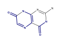 | Matches with TAU or TAU R1, does not match with TAU R2 R3 |
 |
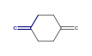 | Matches with TAU, does not match with TAU R* |
Note: The retrieved molecules in the first row are completely the same because of their aromaticity.
The resulting set of this kind of search can contain exact tautomer matches. Additional tautomer parameters have the same effect as in the exact tautomer search.
| Tautomer Query | Examples of Molecules Retrieved (or Not) | Comment |
|---|---|---|
 |
Matches with TAU or TAU R1, does not match with TAU R2 R3 |
|
| 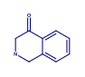 | Matches with TAU or TAU R2, does not match with TAU R1 R3 |
|
 |
Matches with TAU, does not match with TAU R* |
Bingo user has a table called TAUTOMER_RULES. The three rules defined above are contained in this table:
SELECT * FROM Bingo.TAUTOMER_RULES;
ID BEG END
----- ------------------- -------------------
1 N,O,P,S,As,Se,Sb,Te N,O,P,S,As,Se,Sb,Te
2 0C N,O,P,S
3 1C N,O
You can add, remove or update the defined rules. VARCHAR2 strings BEG and END refer to the ends of the
tautomeric chain. Allowed elements are separated by commas. '1' at the beginning means an aromatic atom, and
'0' means an aliphatic (non-aromatic) atom.
INSERT INTO Bingo.TAUTOMER_RULES values($id, $beg, $end);
Note: The ID numbers must be different and belong to the range from 1 to 32.
This type of search estimates the similarity of the molecules by comparing their bit imprints (fingerprints). Characteristics based on the following metrics are supported:
where
All characteristics have values from 0 to 1, with the value of 1 providing the maximum similarity (which means equal fingerprints).
You can specify in the query the minimum similarity and/or the maximum similarity that the fetched molecules must have.
SELECT * FROM $table WHERE Bingo.Sim($column, $query, $metric) > $min;
SELECT * FROM $table WHERE Bingo.Sim($column, $query, $metric) < $max;
SELECT * FROM $table WHERE Bingo.Sim($column, $query, $metric) BETWEEN $min AND $max;
$min is the lower limit of the desired similarity.$max is the upper limit.$metric is a string specifying the metric to use: tanimoto , tversky, or euclid-sub.
In case of Tversky metric, there are optional "alpha" and "beta" parameters: tversky 0.9 0.1 denotes alpha = 0.9, beta = 0.1. The default is alpha = beta = 0.5 (Dice index).You can omit the $metric parameter and write Bingo.Sim($column, $query). The default Tanimoto metric will
be used.
Note: Query features are not allowed in query molecules for similarity search.
| Query Molecule | Metrics | Lower Limit | Examples of Molecules Retrieved |
|---|---|---|---|
| Tanimoto | 0.7 | ||
| Euclid for Substructures | 0.95 |  |
You can get the gross formula of the molecule with the Bingo.Gross() operator:
SELECT Bingo.Gross($molfile) FROM DUAL;
SELECT Bingo.Gross('C1C=CC=CC=1') FROM DUAL;
SELECT Bingo.Gross($column) FROM $table;
You can also query a table for molecules with gross formula more than, less than, or equal to query gross formula.
SELECT * FROM $table WHERE Bingo.Gross($column, '>= $query')=1;
SELECT * FROM $table WHERE Bingo.Gross($column, '<= $query')=1;
SELECT * FROM $table WHERE Bingo.Gross($column, '= $query')=1;
The order of atoms and the spaces in the query does not matter.
| Left Side | Relation | Right Side |
|---|---|---|
| OC6 | = | C6 O |
| OC6 | ? | C6 O |
| C6 O | ? | C8 O2 |
| C6 Cl | ? | C6 |
| C6 H5 | ? | C6 H6 |
Note: Gross formulae are not always comparable: for example, ‘C2 H6 O’ and ‘Ag O N C’
| Query | Examples of Molecules Retrieved |
|---|---|
= C6 H6 |
|
<= C4 H4 O |
 |
>= Cl6 |
The Bingo.Mass operator returns molecular mass as the sum of the standard atomic weights for atoms without
isotope specified and relative atomic masses of isotopes. The table with masses was extracted from the
http://physics.nist.gov/PhysRefData/Compositions website.
SELECT Bingo.Mass($molecule) FROM DUAL;
SELECT Bingo.Mass($column) FROM $table;
You can also query a table for the molecules with molecular mass more than a value, less than a value, or between two values.
SELECT * FROM $table WHERE Bingo.Mass($column) > $lower;
SELECT * FROM $table WHERE Bingo.Mass($column) < $upper;
SELECT * FROM $table WHERE Bingo.Mass($column) BETWEEN $lower AND $upper;
| Query | Examples of Molecules Retrieved | Mass |
|---|---|---|
Bingo.Mass(molecule) > 100 |
130.185 | |
Bingo.Mass(molecule) < 100 |
 |
94.115 |
Bingo provides the possibility for changing default atom masses with the following procedure:
EXECUTE BEGIN Bingo.SetRelativeAtomicMass($str); END;
$str is the VARCHAR2 string. Its value must be contain the default atom masses separated by semicolons, for
example: ”C 12; N 14; O 16”.
The Bingo.Mass has an optional VARCHAR2 parameter, which defines the 'kind' of the resulting molecular
mass value:
Bingo.Mass($molecule, 'molecular-weight') returns the molecular weight (this is the default).Bingo.Mass($molecule, 'most-abundant-mass') returns the most abundant
mass,
which is calculated using most likely isotopic composition for a single random molecule.Bingo.Mass($molecule, 'monoisitopic-mass') returns the monoisotopic
mass, which is calculated using the most abundant isotope
of each element.The Bingo.CANSMILES() operator can be used for generating canonical SMILES of Molfiles, other SMILES, or
binary molecules. The operator works equally well with CLOB, BLOB, and VARCHAR2 operands. The operator always
returns the VARCHAR2 result.
SELECT Bingo.CanSMILES($molfile) FROM DUAL;
SELECT Bingo.CanSMILES($column) FROM $table;
Bingo Canonical SMILES is, according to Daylight and ChemAxon terminology, unique SMILES with isomeric information, or absolute SMILES. All significant molecular features, such as isotopes, charges, radicals, stereocenters, stereogroups, cis-trans bonds, and aromaticity, are encoded into SMILES in a canonical form. A canonical SMILES string defines the molecule independently of any particular representation (atoms renumbering, stereogroups renumbering, explicit/imlpicit hydrogens). So, the equality of canonical SMILES of two molecules guarantees that these molecules are the same, and vice versa:
Bingo.CANSMILES($a) = Bingo.CANSMILES($b)
if and only if
Bingo.Exact($a, $b, 'ALL') = 1
Note: A canonical SMILES computation can only be done for database molecules. Query features are not supported.
Note: If the input molecule is badly formed (i.e. does not conform to any format, has drawing mistakes or has unsupported features), Bingo throws an exception to Oracle.
The Bingo.Fingeprint operator can be used to generate Indigo fingerprints for molecule structures. The operator has two arguments: molecule and options, and returns BLOB result.
SELECT Bingo.Fingerprint($molecule, $type) FROM DUAL;
SELECT Bingo.Fingerprint($binary, $type) FROM DUAL;
SELECT Bingo.Fingerprint($column, $type) FROM $table;
The options are the same as for IndigoObject.fingerprint method from the Indigo SDK described here.
The following fingerprint types are available:
sim — "Similarity fingerprint", useful for calculating similarity measures (the default)sub — "Substructure fingerprint", useful for substructure screening sub-res — "Resonance substructure fingerprint", useful for resonance substructure screeningsub-tau — "Tautomer substructure fingerprint", useful for tautomer substructure screeningfull — "Full fingerprint", which has all the mentioned fingerprint types includedThe Bingo.InChI operator can be used to generate InChI string for a gived molecule structure. The operator has two arguments: molecule and options, and returns CLOB result.
SELECT Bingo.InChI($molecule, $options) FROM DUAL;
SELECT Bingo.InChI($binary, $options) FROM DUAL;
SELECT Bingo.InChI($column, $options) FROM $table;
You can pass any options supported by the official InChI libary. This options can be found in the InChI manual or on the InChI FAQ page. Usage example:
SELECT Bingo.InChI('CC1CC(C)OC(C)N1', '') FROM DUAL;
SELECT Bingo.InChI('CC1CC(C)OC(C)N1', '/DoNotAddH /SUU /SLUUD') FROM DUAL;
SELECT Bingo.InChI('CC1CC(C)OC(C)N1', '-DoNotAddH -SUU -SLUUD') FROM DUAL;
Each option can start with \ or - symbol.
The Bingo.InChIKey operator can be used to generate InChIKey from InChI string:
SELECT Bingo.InChIKey('InChI=1S/C6H6O/c7-6-4-2-1-3-5-6/h1-5,7H') FROM DUAL;
SELECT Bingo.InChIKey(Bingo.InChI('OC1=CC=CC=C1', '')) FROM DUAL;
The Bingo.RSMILES() operator can be used for converting Rxnfiles and binary reactions to reaction SMILES.
The operator works equally well with CLOB, BLOB, and VARCHAR2 operands. The operator always returns the
VARCHAR2 result.
SELECT Bingo.RSMILES($rxnfile) FROM DUAL;
SELECT Bingo.RSMILES($binary) FROM DUAL;
SELECT Bingo.RSMILES($column) FROM $table;
Note: If the input reaction is badly formed (i.e. does not accord to any format, has drawing mistakes or has unsupported features), Bingo throws the exception to Oracle.
When you convert a table to reaction SMILES, you have two possibilities for skipping the bad exception- raising reactions:
1. Short option:
CREATE TABLE $newtable AS SELECT $id $newid, Bingo.RSMILES($rxnfile) $rsmiles FROM $table
WHERE Bingo.CheckReaction($rxnfile) IS NULL;
2. Lengthy but faster option:
CREATE TABLE $newtable ($newid NUMBER, $rsmiles VARCHAR2(4000));
set serveroutput on;
declare
i int := 0;
begin
dbms_output.enable(1000000);
for item in (select $id, $rxnfile from $table) loop
begin
INSERT INTO $newtable values(item.$id, bingo.RSMILES(item.$rxnfile, 1));
exception
when others then
dbms_output.put_line('Bad reaction '|| item.$id ||': ' || SQLERRM);;
end;
i := i + 1;
if i mod 1000 = 0 then
COMMIT;
end if;
end loop;
end;
$table contains Rxnfiles in the $rxnfile column and the reaction ID-s in the $id column. $newtable
will contain reaction SMILES in the $rsmiles column and reaction ID-s in the $newid column.
The Bingo.CompactReaction() operator can be used for converting Rxnfiles and reaction SMILES to internal
binary format. The operator works equally well with CLOB, BLOB, and VARCHAR2 operands. The operator always
returns the BLOB result.
SELECT Bingo.CompactReaction($rxnfile, $xyz) FROM DUAL;
SELECT Bingo.CompactReaction($rsmiles, $xyz) FROM DUAL;
SELECT Bingo.CompactReaction($column, $xyz) FROM $table;
The $xyz parameter must be 0 or 1. If it is 1, the positions of atoms are saved to the binary format. If it
is zero, the positions are skipped.
Note: If the input reaction is badly formed (i.e. does not conform to any format, has drawing mistakes or has unsupported features), Bingo throws the exception to Oracle.
When you convert a table to binary format, you have two possibilities for skipping the bad exception-raising reactions:
1. Short option:
CREATE TABLE $newtable AS SELECT $id $newid, Bingo.CompactReaction($rxnfile, &xyz) $binary FROM $table
WHERE Bingo.CheckReaction($rxnfile) IS NULL;
2. Lengthy but faster option:
CREATE TABLE $newtable ($newid NUMBER, $binary BLOB) lob($binary) store as (enable storage in row);
set serveroutput on;
declare
i int := 0;
begin
dbms_output.enable(1000000);
for item in (select $id, $rxnfile from $table) loop
begin
INSERT INTO $newtable values(item.$id, bingo.CompactReaction(item.$rxnfile, $xyz));
exception
when others then
dbms_output.put_line('Bad reaction '|| item.$id ||': ' || SQLERRM);
end;
i := i + 1;
if i mod 1000 = 0 then
COMMIT;
end if;
end loop;
end;
The following command creates the index:
CREATE INDEX $index ON $table ($column) INDEXTYPE IS Bingo.ReactionIndex;
$table is the name of the table containing reaction data in the column $column. $index is the unique
name of the Oracle domain index that will be created.
The general form of reaction exact search query is as follows:
SELECT * FROM $table WHERE Bingo.RExact($column, $query, $parameters)=1;
You can omit the $parameters value:
SELECT * FROM $table WHERE Bingo.RExact($column, $query)=1;
It is equal to:
SELECT * FROM $table WHERE Bingo.RExact($column, $query, 'ALL')=1;
This kind of search makes it possible for you to set various search conditions. If no search conditions are set, two molecules are considered similar when they are completely equal (up to aromaticity and implicit/explicit hydrogens). You can set up the flags to match only some characteristics of the molecule:
The supported flags are:
| Flag | Comment |
|---|---|
| ELE | Distribution of electrons: bond types, atom charges, radicals, valences |
| MAS | Atom isotopes |
| STE | Stereochemistry: chiral centers, stereogroups, and cis-trans bonds |
| AAM | Atom-to-atom mapping |
| RCT | Reacting centers |
| ALL | All of the above (the most restrictive kind of search) |
| NONE | None of the above (the most flexible kind of search) |
The flags, which can be combined in any way, should go in the parameters string separated by space. You can write the minus sign before the flag to exclude it from the
'ALL' flag. For example, 'ALL -MAS -AAM' means that all the described features except the isotopes and the AAM numbers must match. The NONE flag, if present, must be single.
You can search over your database for reaction SMARTS expression match with the following query:
SELECT * FROM $table WHERE Bingo.RSMARTS($column, $rsmarts)=1;
The general form of the substructure search query is the following:
SELECT * FROM $table WHERE Bingo.RSub($column, $query)=1;
$table is the name of the table containing the reaction $column. The target reactions may be
represented in Rxnfile, reaction SMILES or binary format. $column may have CLOB, VARCHAR2, and BLOB data
type.$query is a VARCHAR2 or CLOB containing the query Rxnfile or reaction SMILES.You can specify an arbitrary amount of reactants and products in the query. The different reactants/products of the query match the different reactants/products of the matched target.
| Reaction Substructure Query |
|---|
| Example of Reaction Retrieved |
| 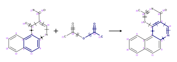 |
You can specify an empty reactant or empty target:
| Reaction Substructure Query |
|---|
 |
| Example of Reaction Retrieved |
 |
Query atom-to-atom mapping, when present, is taken into account:
| Reaction Substructure Query |
|---|
| 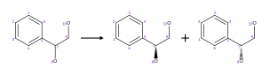 |
| Example of Reaction Retrieved |
| 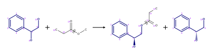 |
| Example of Reaction Not Retrieved |
 |
Reacting centers in the query, if present, match the target reacting centers as well:
| Reaction Substructure Query |
|---|
| Example of Reaction Retrieved |
| 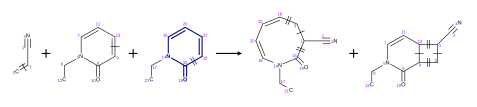 |
| Example of Reaction Not Retrieved |
| 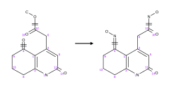 |
Stereo inversion/retention flags are supported in the query:
| Reaction Substructure Query |
|---|
| Example of Reaction Retrieved |
 |
| Example of Reaction Not Retrieved |
 |
You can specify any query features, as in the molecule substructure search, except the R-Groups:
| Reaction Substructure Query |
|---|
| 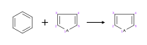 |
| Example of Reaction Retrieved |
| 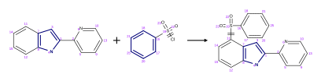 |
The following Bingo operator is used to compute reaction AAM:
Bingo.AAM($reaction, $strategy)
You can get the resulting reaction by selecting it from the DUAL table:
SELECT Bingo.AAM($reaction, $strategy) FROM DUAL;
As $reaction you can specify VARCHAR2, CLOB, or BLOB containing reaction SMILES, Rxnfile of binary
reaction.
$strategy is one of the following VARCHAR2 strings:
DISCARD: discards the existing mappings entirely and considers only the existing reaction centers.KEEP: keeps the existing mapping and maps unmapped atoms.ALTER: alters the existing mapping, and maps the rest of the reaction but may change the existing
mapping.CLEAR: removes the mappings from the reaction.Note: In the 'KEEP' and 'ALTER' modes, any possible contradictions between the existing mapping and the reaction centers are resolved by correcting the reacting centers.
As a result, the operator always returns CLOB with Rxnfile.
Note: In case the given reaction does not have atom positions (i.e. is represented as a reaction SMILES or binary format without atom positions), the automatic reaction layout is performed.
Building the mapping from reacting centers (DISCARD mode):
| Source Reaction |
|---|
| Resulting Reaction |
| 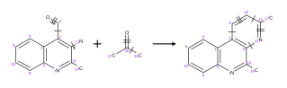 |
Keeping the existing mapping (KEEP mode). Note also the change in the 3-7 reacting center:
| Source Reaction |
|---|
| 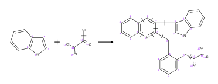 |
| Resulting Reaction |
 |
Altering the existing mapping (ALTER mode). Note the correction of bond 16-18, the renumbering of mapped
atoms and numbering of the unmapped atoms:
| Source Reaction |
|---|
 |
| Resulting Reaction |
| 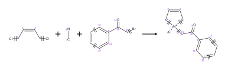 |
Clearing the mapping (CLEAR mode):
| Source Reaction |
|---|
 |
| Resulting Reaction |
The Bingo.RFingeprint operator can be used to generate Indigo fingerprints for reaction structures. The operator has two arguments: reaction and options and returns BLOB result.
SELECT Bingo.Fingerprint($reaction, $type) FROM DUAL;
SELECT Bingo.Fingerprint($binary, $type) FROM DUAL;
SELECT Bingo.Fingerprint($column, $type) FROM $table;
The options are the same as for IndigoObject.fingerprint method from the Indigo SDK described here.
The following fingerprint types are available:
sim — "Similarity fingerprint", useful for calculating similarity measures (the default)sub — "Substructure fingerprint", useful for substructure screening full — "Full fingerprint", which has all the mentioned fingerprint types includedYou can specify zero right side in the Bingo operator calls in order to find targets that do not match the query.
SELECT * FROM $table WHERE Bingo.Sub($column, $query, $parameters)=0;
SELECT * FROM $table WHERE Bingo.Exact($column, $query, $parameters)=0;
SELECT * FROM $table WHERE Bingo.Gross($column, $query, $parameters)=0;
SELECT * FROM $table WHERE Bingo.RSub($column, $query)=0;
Along with the results of the substructure search, you can get back the target molecules or reactions in Molfile/Rxnfile v3000 format with the query fragment highlighted.
SELECT $id, Bingo.SubHi(1) FROM $table WHERE Bingo.Sub($column, $query, 1)=1;
You can also do an affine transformation or a conformation search in this manner.
SELECT $id, Bingo.SubHi(1) FROM $table WHERE Bingo.Sub($column, $query, 'AFF $rms', 1)=1;
SELECT $id, Bingo.SubHi(1) FROM $table WHERE Bingo.Sub($column, $query, 'CONF $rms', 1)=1;
SMARTS search results also can be viewed with highlighting:
SELECT $id, Bingo.SmartsHi(1) FROM $table WHERE Bingo.SMARTS($column, $query, 1)=1;
When performing tautomer search, you can highlight the tautomeric chains that differ in query and target.
SELECT $id, Bingo.ExactHi(1) FROM $table WHERE Bingo.Exact($column, $query, 'TAU $parameters', 1)=1;
In tautomer substructure search, both the fragment and chains are highlighted.
SELECT $id, Bingo.SubHi(1) FROM $table WHERE Bingo.Sub($column, $query, 'TAU $parameters', 1)=1;
For reaction substructure search, you can highlight the query reaction in the target reaction.
SELECT $id, Bingo.RSubHi(1) FROM $table WHERE Bingo.RSub($column, $query, 1)=1;
Examples of highlighting are all over the User Manual. The highlighted fragments in the examples are rendered in bold font and double bond width.
Note: In case the matched molecule or reaction does not have layout information (i.e. is represented as SMILES or binary format with atom positions switched off), the automatic layout procedure is performed.
You can also convert the highlighted Molfiles/Rxnfiles to SMILES, which will contain the highlighting information encoded to a format understandable by Indigo toolkit, and particularly by the indigo-depict utility:
SELECT $id, Bingo.SMILES(Bingo.SubHi(1)) FROM $table WHERE Bingo.Sub($column, $query, 1)=1;
SELECT $id, Bingo.SMILES(Bingo.SmartsHi(1)) FROM $table WHERE Bingo.SMARTS($column, $query, 1)=1;
You can mix the cartridge operators with other (standard) operators to restrict the set of fetched results:
SELECT * FROM $table WHERE Bingo.Sub($column, $query)=1 AND $molweight < $value;
Mixing various Bingo operators is also possible:
SELECT * FROM $table WHERE Bingo.Sub($column, $query)=1 AND Bingo.Gross($column, '>= C20')=1;
You can select from two or more tables:
SELECT * FROM $table1, $table2 WHERE
Bingo.Sub($column1, $query1)=1 AND Bingo.Sub($column2, $query2)=1 AND
Bingo.Gross($column1)=Bingo.Gross($column2);
Note: In case $query is a VARCHAR2 string, Bingo is able to make use of Oracle's Cost-Based Optimizer
(CBO) capability. This capability allows Oracle to call single operator functions rather than to use the index
implementation, if the former gives higher performance expectations.
Note: A CLOB $query does not take advantage of CBO due to the technical limitation of Oracle.
You can import a molecule or reaction table from an SDF file. You can also import SDF fields corresponding to
each record in the SDF file. Prior to importing, you have to create the table manually and grant to Bingo
the access to insert to your table:
CREATE TABLE $table(..., $column CLOB, ...);
GRANT INSERT ON $table to Bingo;
EXEC Bingo.ImportSDF('$table', '$column', '$other_columns', '$filename');
$table is the name of the table subject to import, including the schema qualifier.$column is the name of the CLOB column containing the data in Molfile or Rxnfile format.$other_columns is the comma-separated list of space-separated 'property-column' pairs that are to be
imported. Each given SDF property is mapped to the given table column. You can specify an empty string or
NULL if there are no properties to import.$filename is the location of the resulting file on the server filesystem.One can import a part of PubChem database (stored, for example, in pubchem.sdf file) with the following
commands:
CREATE TABLE STRUCTURES(cid INT, structure CLOB, name VARCHAR2(4000), mw NUMBER);
GRANT INSERT ON STRUCTURES to Bingo;
EXEC Bingo.ImportSDF('PUBCHEM.STRUCTURES', 'structure',
'pubchem_compound_cid cid, pubchem_iupac_name name, pubchem_molecular_weight mw',
'/tmp/pubchem.sdf');
GZip-compressed data is detected automatically in ImportSDF, and so you can call it the same way:
EXEC Bingo.ImportSDF('PUBCHEM.STRUCTURES', 'structure',
'pubchem_compound_cid cid, pubchem_iupac_name name, pubchem_molecular_weight mw',
'/tmp/pubchem.sdf.gz');
Importing RDF files is done with ImportRDF() function the same way as SDF files:
CREATE TABLE $table(..., $column CLOB, ...);
GRANT INSERT ON $table to Bingo;
EXEC Bingo.ImportRDF('$table', '$column', '$other_columns', '$filename');
Importing multi-line molecule or reaction SMILES file is done the similar way with the ImportSMILES()
function:
CREATE TABLE $table($id INT, $column VARCHAR2(4000));
GRANT INSERT ON $table to Bingo;
EXEC Bingo.ImportSMILES('$table', '$column', '$id', '$filename');
$table, $column, and $filename have the usual meaning$id is the column where molecule and reaction identifiers go. The identifier within SMILES string is
anything that goes after the molecule or reaction, separated by space. It is allowed to pass an empty
string or NULL as the $id parameter, if there are no identifiers in the SMILES file subject to import.Note: When you import the file contents to a table, the old table contents are not removed. Thus, you can import multiple files into the same table.
Note: You cannot use these procedures without granting to Bingo the access to select from/insert to
your table.
Exporting SDF files is conducted in a similar way to importing, except that you have to grant to Bingo the
access to select from your table rather than insert to it: You can export the molecule or reaction table to an
SDF file.
EXEC Bingo.ExportSDF($table, $column, $other_columns, $filename);
Example of exporting the PubChem database to the /tmp/pubchem.sdf file:
EXEC Bingo.ExportSDF('PUBCHEM.COMPOUNDS', 'structure', 'cid name mw', '/tmp/pubchem.sdf');
You can also export the table to a GZip-compressed SDF file:
EXEC Bingo.ExportSDFZip($table, $column, $other_columns, $filename);
In this case, please do not forget to append .gz to the file name:
EXEC Bingo.ExportSDFZip('PUBCHEM.COMPOUNDS', 'structure', 'cid name mw', '/tmp/pubchem.sdf.gz');
Bingo.Name function extracts the molecule or reaction name from Molfile, Rxnfile, or SMILES string.
SELECT bingo.Name(molfile) from mytable;
SELECT bingo.Name('c1ccc2ccccc2c1 Naphthalene') from DUAL;
Use the Bingo.Molfile operator to convert SMILES or binary molecule back to Molfile:
SELECT Bingo.Molfile($smiles) from DUAL;
SELECT Bingo.Molfile($binary) from DUAL;
SELECT Bingo.Molfile($column) from $table;
Use the Bingo.Rxnfile operator to convert reaction SMILES or binary reaction back to Rxnfile:
SELECT Bingo.Rxnfile($rsmiles) from DUAL;
SELECT Bingo.Rxnfile($binary) from DUAL;
SELECT Bingo.Rxnfile($column) from $table;
Use the Bingo.CML operator to convert SMILES or Molfile to the [CML]
(http://en.wikipedia.org/wiki/Chemical_Markup_Language) format:
SELECT Bingo.CML($smiles) from DUAL;
SELECT Bingo.CML($binary) from DUAL;
SELECT Bingo.CML($column) from $table;
Similarly, the Bingo.RCML operator returns the input reaction converted to the CML format:
SELECT Bingo.RCML($smiles) from DUAL;
SELECT Bingo.RCML($binary) from DUAL;
SELECT Bingo.RCML($column) from $table;
Note: If the input molecule of reaction is badly formed (i.e. does not conform to any format, has drawing mistakes or has unsupported features), Bingo throws the exception to Oracle.
Note: In case the input molecule or reaction does not have layout information (i.e. is represented in reaction SMILES or binary format with atom positions switched off), the automatic layout procedure is performed.
You can use the Bingo.CheckMolecule() function to check that molecules are presented in acceptable form:
SELECT Bingo.CheckMolecule($molecule) from DUAL;
SELECT Bingo.CheckMolecule($column) from $table;
If the molecule is correct, the function returns NULL. Otherwise, it returns the VARCHAR2 string with the error message. For example, you can select all incorrect molfiles from the table by the following query:
SELECT * from (SELECT $id, Bingo.CheckMolecule($molfile) cm FROM $table) WHERE cm is not null;
You can check reactions for correctness with the Bingo.CheckReaction() function:
SELECT Bingo.CheckReaction($reaction) from DUAL;
SELECT Bingo.CheckReaction($column) from $table;
SELECT * from (SELECT $id, Bingo.CheckReaction($rxnfile) cr FROM $table) WHERE cr is not null;
The Bingo.FileToClob() function accepts a VARCHAR2 file path and loads a file from the server file system
to Oracle CLOB.
SELECT Bingo.FileToClob($path) FROM DUAL;
Usually you may want to load the query molecule in the following way:
SELECT * form $table WHERE Bingo.Sub($column, Bingo.FileToClob($path))=1;
The Bingo.ClobToFile() procedure accepts a CLOB and VARCHAR2 file path and saves the CLOB to the server
file system.
EXECUTE BEGIN Bingo.ClobToFile($lob, $path); END;
You can use Bingo.Zip() function to convert CLOBs to BLOBs which are in fact GZip data:
CREATE TABLE $gztable as SELECT $id, Bingo.Zip($data) $gzdata FROM $table;
Table indexing and all queries should work on compressed Molfile/Rxnfile BLOB-s exactly the same way as they work on ordinary Molfile/Rxnfile CLOB-s. To uncompress the data back, please use Bingo.Unzip() function:
SELECT Bingo.Unzip($gzdata) FROM $gztable;
Note: Normally, you would not need these functions, as long as you have a possibility of using SMILES and Bingo compact formats for molecules and reactions.
You can get the product version from the following query:
select Bingo.GetVersion from DUAL;
The log file is called bingo.log and located in the system temporary directory on the server file system.
Usually it is:
/tmp/bingo.log on Linux and SolarisC:\Windows\Temp\bingo.log, C:\WINNT\Temp\bingo.log, or C:\TEMP\bingo.log on WindowsAll operation of Bingo is logged. All error and warning messages (not necessarily visible in SQL session) are logged. Most importantly, the Oracle ROWID of each indexed molecule or reaction is recorded, and so you could easily find the molecules and/or reactions that have caused problems. Some performance measures of the SQL queries are written to the log as well.